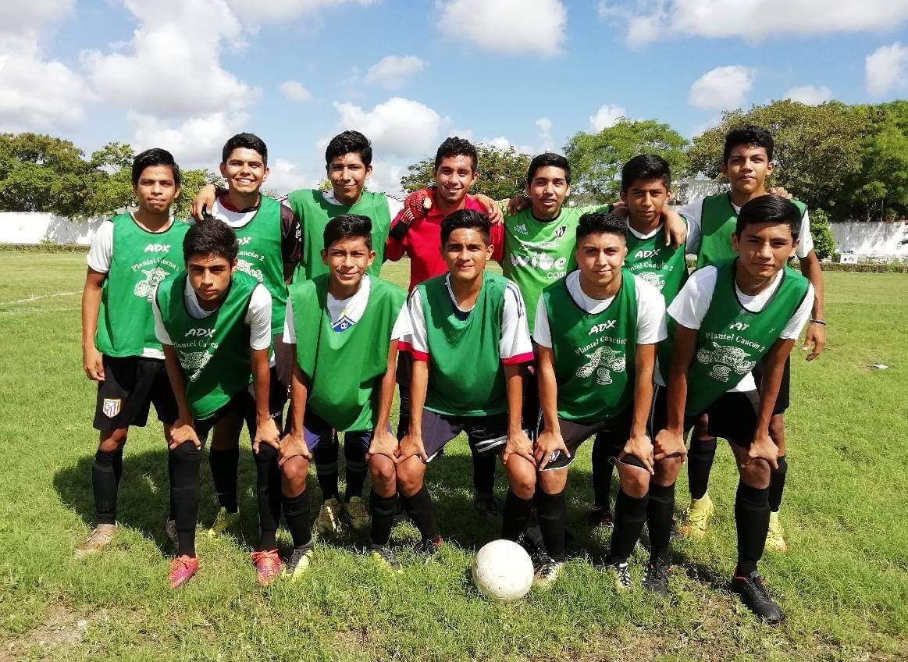
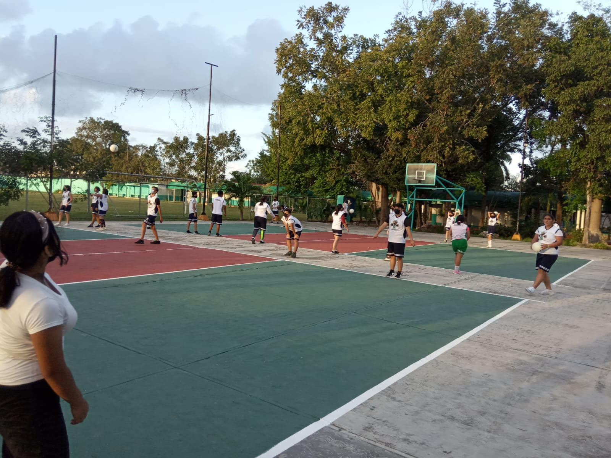
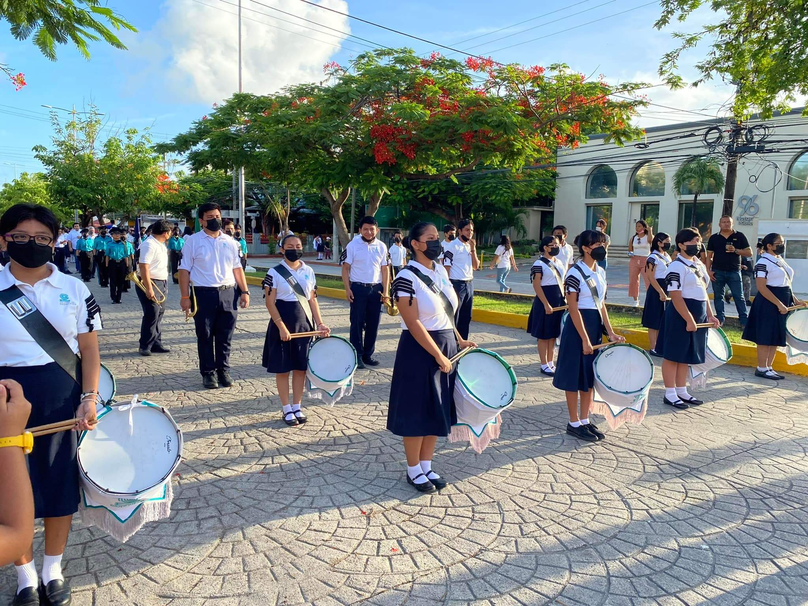
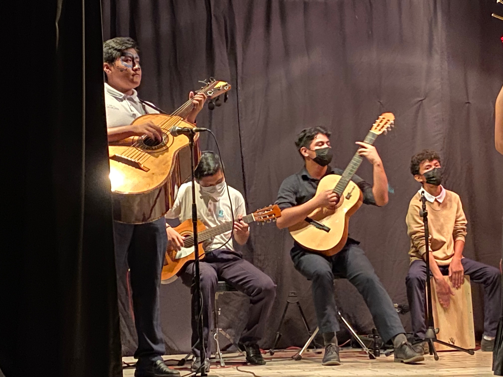
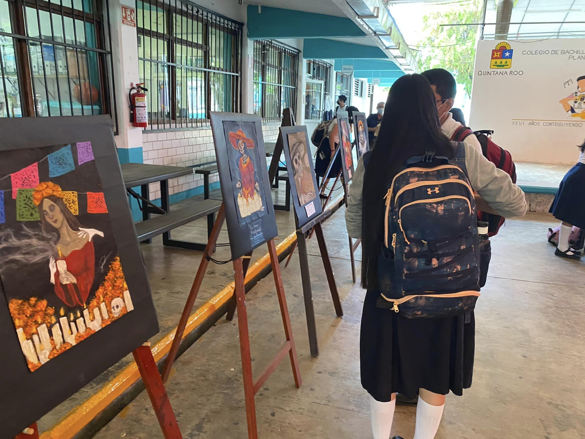
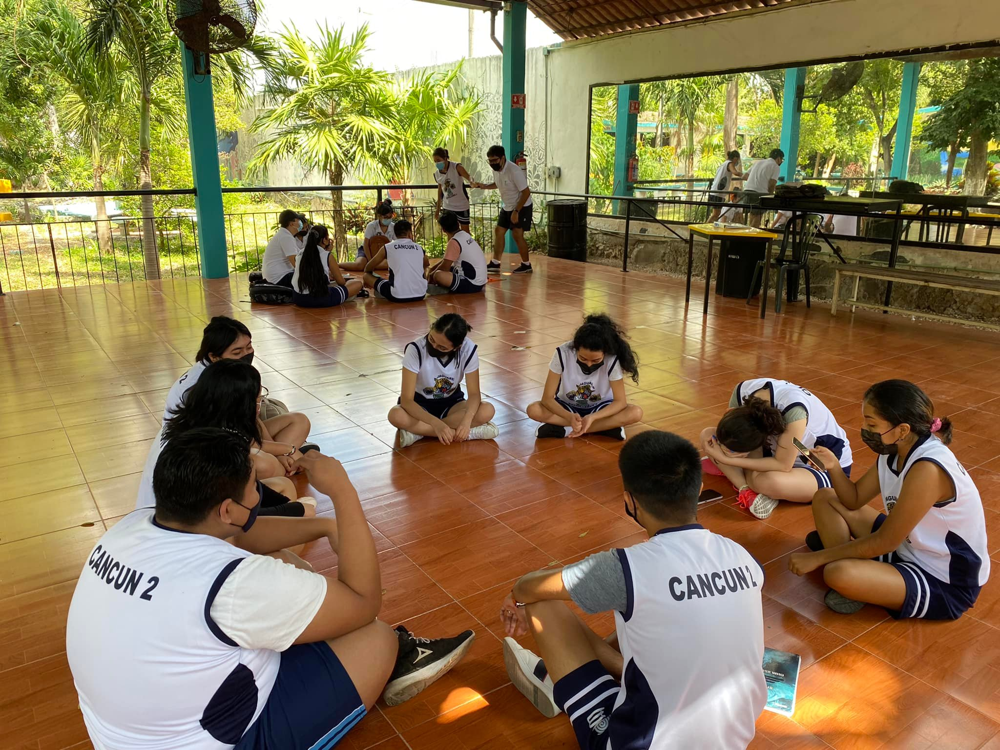
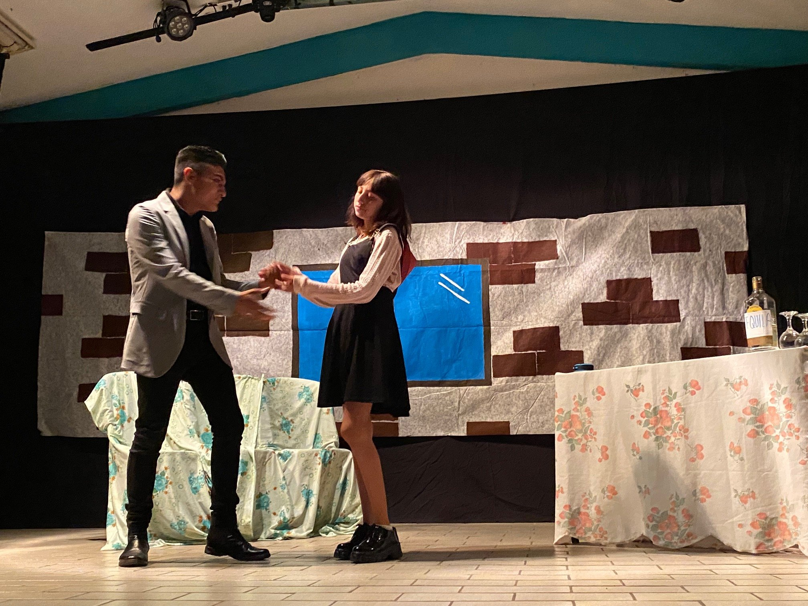

<!Doctype html>
<html lang="es">
    <head>
        <link rel="stylesheet" href="estilos/estilosparaescolares.css">
    </head>
    <body>
          <aside id="textillo">
            <h2>Los paraescolares del Colegio de Bachilleres Plantel Cancún Dos</h2>
            <p>
            Dentro de las distintas actividades que se pueden realizar dentro del COBACH Plantel Cancún Dos, se encuentran las actividades paraescolares, si bien, tienen un rubro obligatorio, es decir, el formar parte de un paraescolar no es opcional, si podemos escoger en que paraescolar queremos estar.
            <br>
            Estas actividades son muy importantes para los alumnos ya que permite que puedan desarrollarse a nivel físico, psicológico y emocional, así como desarrollar hábitos saludables y/o habilidades que pueden serles de ayuda en el futuro.
            </p>
            <p>
            En el colegio de Bachilleres Plantel Cancún Dos se encuentran los siguientes paraescolares:
            </p>
              <div id="parescolares">
                <h3>Futbol</h3>
                <figure>
                    
                </figure>
            <h3>volibol</h3>
                <figure>
                    
                </figure>
            <h3>basquetbol</h3>
                <figure>
                    
                </figure>
            <h3>banda de guerra</h3>
                <figure>
                    
                </figure>
            <h3>Musica</h3>
                <figure>
                    
                </figure>
            <h3>Escolta</h3>
                <figure>
                    
                </figure>
            <h3>Pintura</h3>
                <figure>
                    
                </figure>
            <h3>Danza folclórica</h3>
                <figure>
                    
                </figure>
            <h3>Teatro</h3>
                <figure>
                    
                </figure>
              </div>
            
        </aside>
        <section>
        </section>
    </body>
</html>